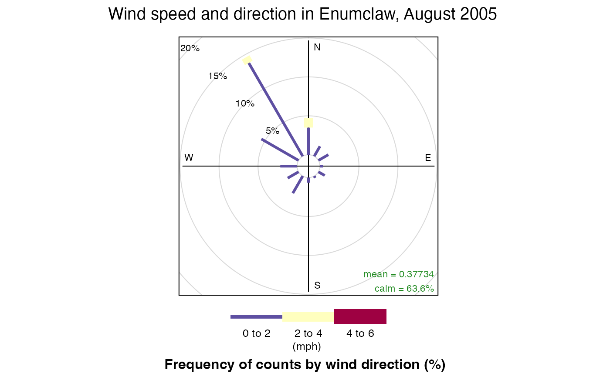
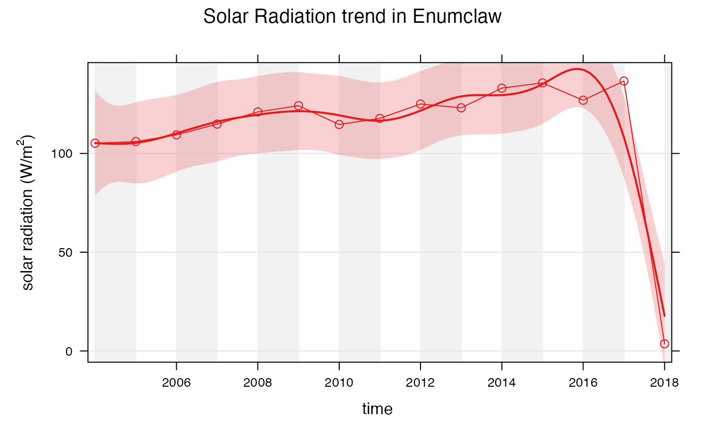

Working With openair
Eli Grosman
August 18, 2020
Source:vignettes/articles/Working_with_openair.Rmd
Working_with_openair.RmdBackground
The RAWSmet package was developed with the intent to make downloading and working with weather data gathered by RAWS stations simpler. Using this package in conjunction with the openair package can make some beautiful and informative visualizations of RAWS data.
Openair is an R package designed specifically for modeling air quality data. The package provides many different tools for plotting wind and pollution roses, flexible time series plots, and more. Additionally, openair can easily group data and plot it by different periods such as by the hour, day, day of the week, season, and year. More information and documentation for openair may be found on its website: https://davidcarslaw.github.io/openair/.
The goal of this document is to introduce the use of RAWSmet and openair to create visualizations of weather data. Additionally, this document may be used as a reference for using RAWSmet effectively for analyzing RAWS data.
Setting up RAWSmet
Follow these instructions to set up RAWSmet correctly. These instruction may also be found on the package’s website: https://mazamascience.github.io/RAWSmet/.
To follow along with the rest of this document you may also install openair by running the following in the RStudio console:
install.packages("openair")This package is designed to be used with R (>= 3.3) and RStudio so make sure you have those installed first.
Users will want to install the remotes package to have access to the latest version of the package from GitHub.
The following packages should be installed by typing the following at the RStudio console:
# Note that vignettes require knitr and rmarkdown
install.packages('knitr')
install.packages('rmarkdown')
install.packages('MazamaSpatialUtils')
remotes::install_github('MazamaScience/MazamaLocationUtils')
devtools::install_github('MazamaScience/RAWSmet')Any work with spatial data, e.g. assigning states, counties and timezones, will require installation of required spatial datasets. To get these datasets you should type the following at the RStudio console:
library(MazamaSpatialUtils)
dir.create('~/Data/Spatial', recursive = TRUE)
setSpatialDataDir('~/Data/Spatial')
installSpatialData()Data generated with package functions can be be saved and reloaded in a dedicated directory much the same as the spatialDataDir used above:
library(RAWSmet)
dir.create('~/Data/RAWS', recursive = TRUE)
setRawsDataDir('~/Data/RAWS')The rawsDataDir must be set up correctly to use its functionality. RAWS data takes a long time to download so data may be saved to this directory so it does not need to be downloaded again in the future.
Preparing data for openair
Before using RAWS data with openair, we must ensure that the data is downloaded correctly and is in the correct format.
First, create a RAWS timeseries object using RAWSmet’s fw13_createTimeseriesObject() function (or wrcc_createTimeseriesObject() for current RAWS data from the WRCC).
library(RAWSmet) library(MazamaSpatialUtils) setRawsDataDir("~/Data/RAWS") setSpatialDataDir("~/Data/Spatial") meta <- fw13_createMetadata() head(meta)
## # A tibble: 6 x 8
## nwsID longitude latitude elevation siteName countryCode stateCode timezone
## <chr> <dbl> <dbl> <dbl> <chr> <chr> <chr> <chr>
## 1 021503 -114. 34.1 360 AHAKAHV P… US AZ America/…
## 2 500726 -141. 62.8 1800 ALCAN HWY… US AK America/…
## 3 020401 -109. 33.8 8188 ALPINE US AZ America/…
## 4 500742 -146. 65.0 1100 ANGEL CRE… US AK America/…
## 5 032101 -92.8 35.6 1600 ARMSTEAD … US AR America/…
## 6 010702 -87.3 34.3 989 BANKHD US AL America/…# nwsID 451702 is Enumclaw, WA enumclawTSObj <- fw13_createTimeseriesObject(nwsID = 451702, meta = meta)
This timeseries object contains two dataframes, one of station metadata and another of cleaned weather data.
names(enumclawTSObj)
## [1] "meta" "data"# View station metadata enumclawTSObj$meta
## # A tibble: 1 x 8
## nwsID longitude latitude elevation siteName countryCode stateCode timezone
## <chr> <dbl> <dbl> <dbl> <chr> <chr> <chr> <chr>
## 1 451702 -122. 47.2 742 ENUMCLAW US WA America/Lo…# View sample of raw data head(enumclawTSObj$data)
## # A tibble: 6 x 9
## datetime temperature humidity windSpeed windDirection maxGustSpeed
## <dttm> <dbl> <dbl> <dbl> <dbl> <dbl>
## 1 2004-01-06 03:00:00 23.5 28.5 11 170 20
## 2 2004-01-06 04:00:00 26 28.5 12 167 23
## 3 2004-01-06 05:00:00 28.5 28.5 10 165 27
## 4 2004-01-06 07:00:00 28.5 29 7 29 9
## 5 2004-01-06 08:00:00 28.5 34.5 7 25 11
## 6 2004-01-06 09:00:00 28.5 34.5 7 22 11
## # … with 3 more variables: maxGustDirection <dbl>, precipitation <dbl>,
## # solarRadiation <dbl>Openair requires that dates and times of observations are stored in a column called date. However, RAWSmet names this column datetime. Create the correct date column by running:
library(dplyr) # Create a new column by copying the data from datetime enumclawTSObj$data$date <- enumclawTSObj$data$datetime # Another solution is to rename the column using dplyr: # enumclawTSObj$data <- dplyr::rename(enumclawTSObj$data, date = datetime)
Note that this RAWS timeseries object contains all of the data gathered by the specified station in its lifetime. We can filter the data to look at periods of interest. It is also important to note that the datetimes stored in these RAWS timeseries objects are in UTC.
library(MazamaCoreUtils) # 20050101 will be parsed as Jan. 1st, 2005 start2005 <- MazamaCoreUtils::parseDatetime(20050101, timezone = "UTC") # 20060101 will be parsed as Jan 1st. 2006 end2005 <- MazamaCoreUtils::parseDatetime(20060101, timezone = "UTC") # 20050801 will be parsed as Aug. 1st, 2005 startAug2005 <- MazamaCoreUtils::parseDatetime(20050801, timezone = "UTC") # 20050901 will be parsed as Sep. 1st, 2005 endAug2005 <- MazamaCoreUtils::parseDatetime(20050901, timezone = "UTC") # Get all observations between these dates enumclaw2005 <- dplyr::filter(enumclawTSObj$data, date >= start2005 & date < end2005) enumclawAug2005 <- dplyr::filter(enumclawTSObj$data, date >= startAug2005 & date < endAug2005)
After renaming the datetime column and filtering by dates of interest, we are now ready to create visualizations using openair.
Using openair
The RAWS timeseries object contains data for temperature, humidity, wind speed, wind direction, max gust speed, max gust direction, precipitation, and solar radiation. We can utilize various openair plots to gain useful information from each of these columns.
Wind rose plots
Let us first create some wind rose plots. Openair’s windRose() function requires 3 arguments: the data to create the plot for, and the names of the wind speed and wind direction columns. By default windRose() looks for columns named ws and wd for wind speed and direction respectively so it is important to specify these names when calling the function. Again, openair requires that dates and times of observations are stored in a column named date.
library(openair) openair::windRose(enumclawAug2005, ws = "windSpeed", wd = "windDirection", main = "Wind speed and direction in Enumclaw, August 2005", key.footer = "(mph)")

windRose() can also group data and plot it by different periods. Lets look at the wind speed and directions by season in Enumclaw:
openair::windRose(enumclaw2005, ws = "windSpeed", wd = "windDirection", main = "Wind speed and direction in Enumclaw, 2005", type = "season", key.footer = "(mph)")

Time-series plotting
Openair can also be used to create time-series plots and trends. Lets first take a look at the function timePlot(). This function requires 2 arguments: the data to create the plot for, and pollutant, the name of the column to plot with respect to time. Again, timePlot() requires that dates and times of observations are stored in a column named date.
openair::timePlot(enumclawAug2005, pollutant = "temperature", main = "Temperature in Enumclaw, August 2005", key = F, ylab = "temperature (°F)", xlab = "time")

timePlot() can also plot multiple columns so they can be compared against each other. Lets compare temperature and humidity in Enumclaw in August 2005:
openair::timePlot(enumclawAug2005, pollutant = c("temperature", "humidity"), main = "Temperature and Humidity in Enumclaw, August 2005", key = T, name.pol = c("temperature (°F)", "humidity (%)"), ylab = "")

Plotting trends in data is also very easy using openair. The smoothTrend() function plots monthly averages against the trend in the variable of interest. Lets look at the trend of solar radiation in Enumclaw in 2005:
openair::smoothTrend(enumclaw2005, pollutant = "solarRadiation", main = "Solar Radiation trend in Enumclaw, 2005", statistic = "mean", ylab = expression('solar radiation (W/m'^2*')'), xlab = "time")

Instead of comparing monthly averages to the trend of the data, openair can also compare different averages.
openair::smoothTrend(enumclawTSObj$data, pollutant = "solarRadiation", main = "Solar Radiation trend in Enumclaw", statistic = "mean", ylab = expression('solar radiation (W/m'^2*')'), xlab = "time", avg.time = "year")
